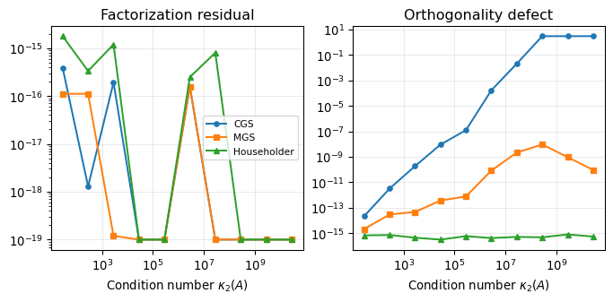

import numpy as np
import matplotlib.pyplot as plt
def gram_schmidt(A, *, modified):
A = np.asarray(A, dtype=np.result_type(A, np.float64))
m, n = A.shape
Q = np.zeros((m, n), dtype=A.dtype)
R = np.zeros((n, n), dtype=A.dtype)
for j in range(n):
w = A[:, j].copy()
if modified:
for i in range(j):
R[i, j] = np.vdot(Q[:, i], w)
w -= Q[:, i] * R[i, j]
else:
basis = Q[:, :j]
R[:j, j] = basis.conj().T @ w
w -= basis @ R[:j, j]
R[j, j] = np.linalg.norm(w)
if R[j, j] == 0:
raise ValueError("Zero residual during orthogonalization")
Q[:, j] = w / R[j, j]
return Q, R5 Session 4 — QR Factorization
Suppose two independent columns point almost in the same direction. They still form a basis of their plane, but recovering the small difference between their directions requires subtracting nearly equal vectors. Can we keep the plane, choose better axes in it, and still recover coordinates in the original basis? The two factors in \(A=QR\) answer these questions separately.
Study route (90 minutes). Spend 20 minutes on coordinates and Gram–Schmidt, 20 on reflectors, 15 on floating-point behavior, 15 on least squares and the seminar connection, and 20 on the exercises. In the worked examples, cover the next line and predict either a coefficient, a zero, or the dimension of a factor before continuing.
5.1 One space, two coordinate systems
Let \(A=[a_1,\ldots,a_n]\in\mathbb F^{m\times n}\), where \(\mathbb F\) is \(\mathbb R\) or \(\mathbb C\), \(m\ge n\), and the columns are independent. A star denotes the conjugate transpose, which reduces to transpose over \(\mathbb R\). Write \(U=\operatorname{im} A\). From Session 1, \(x\mapsto Ax\) takes coordinates in the ordered column basis to vectors in \(U\). Choose an orthonormal basis \(q_1,\ldots,q_n\) of \(U\) as in Session 2 and collect it in \(Q\). The coordinates of \(y\in U\) in this basis are \(Q^*y\), since \(Q^*Q=I_n\). For arbitrary \(b\in\mathbb F^m\), Session 3 gives the projection \(P_Ub=QQ^*b\).
What makes the coordinate matrix triangular? Choose the new basis to preserve every initial span, \[ \operatorname{span}(q_1,\ldots,q_j)=\operatorname{span}(a_1,\ldots,a_j). \] Then \(a_j\) uses only \(q_1,\ldots,q_j\). Writing its coordinates in column \(j\) of \(R\) places zeros below the diagonal. Thus \[ A=QR,\qquad Ax=Q(Rx),\qquad Q^*A=R. \] The middle identity fixes the direction of the coordinate change. Given orthonormal coordinates \(c\), the original coordinates solve \(Rx=c\) by back substitution, starting with \(x_n=c_n/r_{nn}\). Invertibility of \(R\) implies \(\operatorname{im}A=\operatorname{im}Q\).
| Form | Orthonormal factor | Triangular factor |
|---|---|---|
| Reduced (thin) | \(Q\) is \(m\times n\), \(Q^*Q=I_n\) | \(R\) is \(n\times n\), upper triangular |
| Complete (full) | \(U_f=[Q\ Q_\perp]\) is \(m\times m\), unitary | \(U_f^*A=\begin{bmatrix}R\\0\end{bmatrix}\) is \(m\times n\) |
The zero block has \(m-n\) rows. For square \(A\) the two forms coincide. Thin \(Q\) is an isometry from coefficient space into \(U\), since \(\|Qc\|_2^2=c^*Q^*Qc=c^*c\). A square unitary matrix preserves the norm of every vector in the ambient space. Consequently, transforming existing perturbations by a unitary matrix leaves their Euclidean lengths unchanged. Computing the transformation in floating point still introduces rounding errors.
Existence and uniqueness. Gram–Schmidt below constructs thin QR with \(r_{jj}>0\) real. This convention makes it unique: the first column fixes \(q_1=a_1/\|a_1\|_2\), and at each later step the previous columns determine a unique residual whose normalization fixes \(q_j\). Without the convention, \(QD\) and \(D^*R\) also work for any diagonal \(D\) with entries of modulus one. An orthonormal completion \(Q_\perp\) admits additional freedom. A QR factorization also exists for dependent columns (for example by Householder elimination), but then \(R\) is singular and the positive-diagonal construction breaks down.
5.2 Gram–Schmidt records its work in \(R\)
Suppose \(Q_{j-1}=[q_1,\ldots,q_{j-1}]\) already spans the first \(j-1\) columns. Remove the projection of \(a_j\) onto this space, then normalize what remains: \[ \begin{aligned} r_{ij}&=q_i^*a_j &&(i<j),\\ w_j&=a_j-\sum_{i<j}q_i r_{ij}=(I-Q_{j-1}Q_{j-1}^*)a_j,\\ r_{jj}&=\|w_j\|_2,\qquad q_j=w_j/r_{jj}. \end{aligned} \] Here \(q_i^*w_j=0\) for \(i<j\), and independence gives \(w_j\ne0\). Rearranging yields \(a_j=\sum_{i=1}^j q_i r_{ij}\). This is column \(j\) of \(QR\) and proves the initial-span property by induction. Geometrically, the diagonal \(r_{jj}\) is the distance of \(a_j\) from the preceding span.
Worked example — a plane in three dimensions
Use the matrix \[ A=\begin{bmatrix}3&-2\\4&4\\0&3\end{bmatrix}. \] The first column gives \(r_{11}=5\) and \(q_1=(3,4,0)^T/5\). The component of \(a_2\) along \(q_1\) is \(r_{12}=(-6+16)/5=2\). Removing it gives \[ w_2=a_2-2q_1=\tfrac15(-16,12,15)^T,\qquad \|w_2\|_2=5. \] Hence \[ Q=\tfrac1{25}\begin{bmatrix}15&-16\\20&12\\0&15\end{bmatrix}, \qquad R=\begin{bmatrix}5&2\\0&5\end{bmatrix}. \] Verify both identities. The squared lengths of the integer columns in \(25Q\) are \(625\) and \(625\), and their dot product is \(-240+240=0\). Thus \(Q^*Q=I_2\). In \(QR\) the first column is \(5q_1=(3,4,0)^T\) and the second is \(2q_1+5q_2=(-2,4,3)^T\). In particular the second original basis vector has coordinates \((2,5)^T\) in the new basis.
Classical and modified Gram–Schmidt
Classical Gram–Schmidt (CGS) computes all coefficients against the original column, then subtracts its projection. Modified Gram–Schmidt (MGS) starts with \(w=a_j\) and for \(i=1,\ldots,j-1\) computes \(r_{ij}=q_i^*w\) and immediately updates \(w\leftarrow w-q_ir_{ij}\). Why does the changed inner product give the same coefficient? In exact arithmetic, \[ q_i^*\left(a_j-\sum_{k<i}q_k r_{kj}\right) =q_i^*a_j-\sum_{k<i}(q_i^*q_k)r_{kj}=q_i^*a_j. \] Floating point changes this argument. A computed \(q_i\) may still contain a small component along an earlier direction. With CGS that component is tested against the entire incoming column. MGS first removes the large earlier components, which often makes the next coefficient more accurate. When \(w\) is very small, normalizing it magnifies any contamination it still carries. Even MGS can lose substantial orthogonality.
The following single-pass implementations expose the one operation that changes. They assume independent columns. An exact zero check catches division by zero; deciding numerical rank requires a scale and a tolerance.
Reorthogonalization. Before normalizing, project the residual \(w\) against the previous basis again. For a block projection compute \(h=Q_{j-1}^*w\), subtract \(Q_{j-1}h\) from \(w\), and add \(h\) to the already stored coefficients. This last update keeps the reconstruction of \(a_j\) consistent. A second pass often restores near-working-precision orthogonality when the incoming directions are numerically resolvable. It costs additional inner products and vector updates.
5.3 Householder QR by changing the ambient coordinates
Gram–Schmidt builds one basis vector at a time. Householder QR instead transforms the whole matrix until the columns align with successive coordinate subspaces. The first transformation sends \(a_1\) to the first axis. The next acts only below the first row, preserving the zeros already obtained.
Deriving a reflector
For \(v\ne0\) let \(P_v=vv^*/(v^*v)\). Decompose \(x=(I-P_v)x+P_vx\). Fixing the first component and reversing the second gives \[ Hx=(I-P_v)x-P_vx,\qquad H=I-2P_v. \] Since \(P_v^*=P_v\) and \(P_v^2=P_v\), we get \(H^*=H\) and \(H^*H=I-4P_v+4P_v^2=I\). Over \(\mathbb R\), \(H\) reflects across the hyperplane \(v^\perp\). Over \(\mathbb C\), the same orthogonal decomposition into complex subspaces applies: \(H\) acts as \(+1\) on \(v^\perp\) and \(-1\) on the complex line spanned by \(v\). This is a complex-linear unitary map.
How to choose the normal. For \(x\ne0\), set \(\rho=\|x\|_2\), \(s=x_1/|x_1|\) when \(x_1\ne0\), and \(s=1\) otherwise. Choose \(\alpha=-s\rho\) and \(v=x-\alpha e_1\). Reflection should subtract precisely \(v\) to take \(x\) to \(\alpha e_1\). Indeed, \[ v^*x=\rho^2+\rho|x_1|,\qquad v^*v=2(\rho^2+\rho|x_1|). \] Thus \(Hx=x-v=\alpha e_1\). The opposite-phase target gives \(|v_1|=|x_1|+\rho\), avoiding the cancellation that the other sign could cause when \(x\) already lies close to the axis. For a zero active column use the identity.
Worked example — two eliminations
Return to the plane example. For \(x=(3,4,0)^T\) the target is \(-5e_1\). The normal \(v=(8,4,0)^T\) can be scaled to \((2,1,0)^T\) without changing the reflector. Substitution gives \[ H_1=\begin{bmatrix}-3/5&-4/5&0\\-4/5&3/5&0\\0&0&1\end{bmatrix}, \qquad H_1 A=\begin{bmatrix}-5&-2\\0&4\\0&3\end{bmatrix}. \] The active tail of column two is now \((4,3)^T\). To send it to \((-5,0)^T\), use normal \((9,3)^T\), proportional to \((3,1)^T\). Embed its reflector in the bottom-right corner: \[ H_2=\begin{bmatrix}1&0&0\\0&-4/5&-3/5\\0&-3/5&4/5\end{bmatrix}, \qquad H_2 H_1 A=\begin{bmatrix}-5&-2\\0&-5\\0&0\end{bmatrix}. \] Which order gives \(Q\)? Undo the left multiplications: \(U_f=(H_2H_1)^*=H_1H_2\). Its first two columns are \(-q_1,-q_2\) from the Gram–Schmidt example. The top two rows of the transformed matrix are \(-R\), so the minus signs cancel in the product. The sign convention is the entire difference between these two exact reduced factorizations.
In general, step \(j\) uses \(H_j=\operatorname{diag}(I_{j-1},\widetilde H_j)\) on rows \(j\) through \(m\). Earlier columns already vanish in those rows. If \(H_t\cdots H_1 A=[R^T\ 0]^T\), the full unitary factor is \(H_1\cdots H_t\). In software, store the normals and apply each reflector to a trailing block \(B\) by the rank-one update \(B\leftarrow B-v(2v^*B/(v^*v))\). This also lets us compute \(U_f^*b\) without forming a dense \(U_f\).
5.4 What should a numerical QR test measure?
For computed factors, examine two quantities: \[ d_{\mathrm{fact}}=\|A-\widehat Q\widehat R\|_2,\qquad d_{\mathrm{orth}}=\|\widehat Q^*\widehat Q-I_n\|_2. \] The first tests reconstruction. Divide it by \(\|A\|_2\) when comparing matrices on different scales. The second tests whether coefficient lengths and projection formulas remain trustworthy. For example, doubling one column of an exact \(Q\) and halving the corresponding row of \(R\) leaves the product unchanged, yet the associated diagonal entry of \(\widehat Q^*\widehat Q\) is now \(4\).
| Method | Work for dense real \(m\times n\) input (leading terms) | Numerical behavior and use |
|---|---|---|
| CGS, one pass | About \(2mn^2\) | Block inner products are convenient. Nearly dependent columns can produce severe loss of orthogonality. |
| MGS, one pass | About \(2mn^2\) | Sequential updates often maintain better orthogonality. Useful for appending one Krylov basis vector. |
| Householder | About \(2mn^2-2n^3/3\) | Standard dense QR. A product of nearly isometric steps gives backward stability and typically near-working-precision orthogonality. |
The Gram–Schmidt counts include explicit thin \(Q\). The Householder count stores \(Q\) implicitly; explicitly generating a thin \(Q\) adds work of the same order. Backward stability here means the computed triangular factor corresponds to a matrix close to \(A\) under an exactly unitary transformation, up to dimension-dependent rounding bounds. It gives no guarantee that an intrinsically sensitive least-squares solution has small forward error.
Experiment — making columns approach a common direction
Use the \((n+1)\times n\) real matrix with first row all ones and remaining block \(\delta I_n\). Two columns differ by a vector of length \(\sqrt2\,\delta\). Since \(A^*A=\mathbf1\mathbf1^T+\delta^2I_n\), its extreme eigenvalues are \(n+\delta^2\) and \(\delta^2\) for \(n>1\). Hence \(\kappa_2(A)=\sqrt{n+\delta^2}/\delta\). The scale \(\|A\|_2\) stays almost constant. This lets us vary column dependence without confounding it with the scale of the reconstruction error.
n = 8
deltas = np.logspace(-1, -10, 10)
methods = {
"CGS": lambda A: gram_schmidt(A, modified=False),
"MGS": lambda A: gram_schmidt(A, modified=True),
"Householder": lambda A: np.linalg.qr(A, mode="reduced"),
}
errors = {name: [] for name in methods}
conditions = np.sqrt(n + deltas**2) / deltas
for delta in deltas:
A = np.vstack((np.ones((1, n)), delta * np.eye(n)))
for name, factor in methods.items():
Q, R = factor(A)
residual = np.linalg.norm(A - Q @ R, ord=2)
defect = np.linalg.norm(Q.T @ Q - np.eye(n), ord=2)
errors[name].append((residual, defect))
fig, axes = plt.subplots(1, 2, figsize=(7, 3.4), layout="constrained")
floor = 1e-19
for col, ax in enumerate(axes):
for (name, rows), marker in zip(errors.items(), ("o", "s", "^")):
values = np.array(rows)[:, col]
ax.loglog(conditions, np.maximum(values, floor),
marker=marker, ms=4, label=name)
ax.set_xlabel(r"Condition number $\kappa_2(A)$")
ax.grid(True, which="major", alpha=0.25)
axes[0].set_title("Factorization residual")
axes[1].set_title("Orthogonality defect")
axes[0].legend(fontsize=8)
plt.show()
Read the two panels at the same horizontal position. At small \(\delta\), all three methods can still reconstruct the input to high absolute accuracy. CGS can meanwhile produce an orthogonality defect of order one. The first column is almost a coordinate vector, and the small corrections to inner products can fall below binary64 resolution. MGS removes successive components from the residual and does substantially better on this family. Householder QR maintains orthogonality close to rounding precision. For example, at \(\delta=10^{-10}\), one binary64 run gave orthogonality defects of about \(3\), \(9.4\times10^{-11}\), and \(7.2\times10^{-16}\) for CGS, MGS, and Householder respectively. All three reconstruction residuals were below \(10^{-24}\). The exact residuals, including zeros for particularly simple arithmetic, can vary with the numerical libraries. These curves illustrate mechanisms on one family; they are not universal error laws.
5.5 Least squares reduces to a triangular system
Given \(m>n\) and \(b\in\mathbb F^m\), seek \(x\) minimizing \(\|b-Ax\|_2\). Write \(b=QQ^*b+(I-QQ^*)b\). The first summand and \(Ax\) lie in \(U\); the second summand lies in \(U^\perp\). Pythagoras and the isometry of \(Q\) give \[ \begin{aligned} \|b-Ax\|_2^2 &=\|Q(Q^*b-Rx)\|_2^2+\|(I-QQ^*)b\|_2^2\\ &=\|Q^*b-Rx\|_2^2+\|(I-QQ^*)b\|_2^2. \end{aligned} \] Only the first term depends on \(x\). Invertibility of \(R\) makes that term zero for exactly one \(x\). Thus solve \(Rx=Q^*b\). The vector \(Q^*b\) contains the coordinates of the closest point in the orthonormal basis; back substitution expresses that same point in the original columns. The residual \(r=b-Ax=(I-QQ^*)b\) satisfies \(Q^*r=0\) and hence \(A^*r=0\). With implicit full QR, apply the stored reflectors to \(b\): the first \(n\) transformed entries form the right-hand side and the norm of the remaining entries is the minimal residual norm.
Worked example — fitting a point to the plane
Use the same \(A\) and take \(b=(0,0,5)^T\). Dotting with \(q_1,q_2\) gives \(Q^*b=(0,3)^T\). Back substitution gives \[ 5x_2=3,\qquad 5x_1+2x_2=0,\qquad x=(-6/25,3/5)^T. \] The closest point and the discrepancy are \[ Ax=3q_2=\tfrac1{25}(-48,36,45)^T,\qquad r=\tfrac1{25}(48,-36,80)^T. \] Check \(a_1^Tr=(144-144)/25=0\) and \(a_2^Tr=(-96-144+240)/25=0\). The residual length is \(4\); the fitted vector has length \(3\). Their squared lengths sum to \(\|b\|_2^2=25\). Adding any nonzero displacement within the fitted plane increases the squared distance by the squared length of that displacement.
Why avoid explicitly forming the normal equations?
Residual orthogonality also gives \(A^*Ax=A^*b\). For full column rank, the extreme eigenvalues of \(A^*A\) are the squares of the extreme singular values of \(A\). Thus \(\kappa_2(A^*A)=\kappa_2(A)^2\). By contrast \(\|Ax\|_2=\|Rx\|_2\) for every \(x\), so \(R\) has the same extreme stretching factors and the same \(\kappa_2\) as \(A\). Forming the Gram matrix can round away small independent directions: in the experiment its diagonal entries \(1+\delta^2\) can round to \(1\) even while the entries \(\delta\) remain readily representable. QR avoids this extra loss. The sensitivity of a least-squares solution to changes in the original data also depends on the right-hand side and residual.
If \(A\) is rank deficient, the fitted point remains unique, but one may add any vector of \(\ker A\) to a minimizer. The invertible triangular solve no longer applies. Column-pivoted QR helps identify independent columns and estimate numerical rank. An SVD permits a rank decision from singular values and produces a minimum-norm solution.
5.6 From QR to the seminar
- Power and subspace iteration. Normalizing a single nonzero iterate preserves its line and keeps its length manageable. For a block, normalizing each column separately still permits nearly parallel columns. Thin QR controls their mutual angles as well.
- Chebyshev filtering. In \(Y_{k+1}=p_m(A)Q_k\), the filter changes the relative sizes of spectral components. Strong amplification can make several columns point almost along the same preferred direction. Factor \(Y_{k+1}=Q_{k+1}R_{k+1}\). For independent columns, \(R_{k+1}\) is invertible, so the next basis spans precisely the filtered space. If filtering annihilates a direction, or rounding has already made it indistinguishable, QR cannot reconstruct it. Completing a deficient block would introduce a freely chosen direction.
- Rayleigh–Ritz. For an approximate eigenvector \(Qz\), require \(AQz-\theta Qz\) to be orthogonal to \(\operatorname{im}Q\). Multiplication by \(Q^*\) gives the small problem \((Q^*AQ)z=\theta z\) because \(Q^*Q=I\). Loss of orthogonality undermines this reduction.
- Arnoldi and Lanczos. Arnoldi extends a Krylov basis by orthogonalizing \(Aq_j\) against earlier vectors. For Hermitian \(A\), Lanczos admits a short recurrence in exact arithmetic. In finite precision, reorthogonalization can be important for maintaining independent approximate eigenvector information.
- QR iteration. For square \(A_k=Q_kR_k\), reversing the factors gives \(A_{k+1}=R_kQ_k=Q_k^*A_kQ_k\). Each step preserves eigenvalues by unitary similarity. Here QR changes coordinates for a whole operator; in filtered subspace iteration it provides a basis for a trial space. Session 5 develops the eigenvalues and spectral theorem needed to analyze these operations.
Course reading. The revision plan in §1.4.4 and the seminar link in §1.3.3 of the book motivate this sequence. For the lecture algorithms see Kanschat and Scheichl, Numerical Linear Algebra, §§2.1–2.2 and Appendix A. For least squares and implicit reflector application see Scheichl and Zech, §§3.8–3.9, and Bastian, §§11–12.
5.7 Independent exercises
- Dimensions and coordinates. A \(5\times3\) matrix \(B\) has independent columns. Give the dimensions of both QR factorizations, the ranks of \(QQ^*\) and \(I-QQ^*\) for thin \(Q\), and the orthonormal coordinates of \(Bx\).
- Hand factorization. Compute positive-diagonal thin QR for the columns \(a_1=(1,0,1)^T\), \(a_2=(1,1,1)^T\). Verify both identities and interpret \(r_{22}\) geometrically.
- Reflecting onto an axis. For \(x=(3,-4)^T\), construct the stable-sign reflector, verify \(Hx\) and \(H^TH\), and explain using the inner product why every unitary matrix preserves distances.
- Projection and triangular solve. For the matrix in Exercise 2 and \(b=(2,3,0)^T\), find the closest point to \(b\) in the column plane, its original coordinates, and the distance. Check optimality using both columns.
- A numerical diagnosis. A binary64 run on a matrix of norm near one gives \(d_{\mathrm{fact}}=10^{-16}\) and \(d_{\mathrm{orth}}=10^{-2}\). Which identity is reliable at working precision? Would you use the columns directly in the projector formula? Explain how a second pass or Householder QR changes the computation. Use the experiment to determine why testing reconstruction alone misses the problem.
- Filtering and rank. Take \(A=\operatorname{diag}(2,1,0)\), \(Q_0=[(e_1+e_2)/\sqrt2,\ e_3]\), and \(p(t)=t\). Find the filtered image and its dimension. Repeat with \(p(t)=t+\varepsilon\) for small real \(\varepsilon>0\). What does thin QR preserve, and what does the small diagonal of \(R\) tell you in this example?
5.8 Solutions — consult after attempting the exercises
1. Dimensions and coordinates. Thin factors have sizes \(5\times3\) and \(3\times3\). Full factors have sizes \(5\times5\) and \(5\times3\), with a \(2\times3\) zero block below the triangular part. The projector onto the column space has rank three; its complement has rank two. Since \(Bx=Q(Rx)\), \(Rx\) gives the requested coordinates.
2. Hand factorization. Normalize \(a_1\) to get \(q_1=(1,0,1)^T/\sqrt2\). Then \(r_{12}=q_1^Ta_2=\sqrt2\), and \(a_2-\sqrt2 q_1=(0,1,0)^T=q_2\). Thus \[ Q=\begin{bmatrix}1/\sqrt2&0\\0&1\\1/\sqrt2&0\end{bmatrix}, \qquad R=\begin{bmatrix}\sqrt2&\sqrt2\\0&1\end{bmatrix}. \] Both columns of \(Q\) have norm one and their dot product vanishes. Reconstruction gives \(\sqrt2q_1=a_1\) and \(\sqrt2q_1+q_2=a_2\). Here \(r_{22}=1\) measures the perpendicular distance of \(a_2\) from the line through \(a_1\).
3. Reflecting onto an axis. Choose \(\alpha=-5\), so \(v=(8,-4)^T\) is proportional to \((2,-1)^T\). Then \[ H=\tfrac15\begin{bmatrix}-3&4\\4&3\end{bmatrix}, \qquad Hx=\tfrac15(-25,0)^T. \] The columns of the integer matrix have squared length \(25\) and dot product \(-12+12=0\), so \(H^TH=I\). For any unitary \(U\) and \(d=x-y\), \(\|Ux-Uy\|_2^2=d^*U^*Ud=d^*d\). This proves distance preservation for complex vectors as well.
4. Projection and triangular solve. The orthonormal coordinates are \(Q^Tb=(\sqrt2,3)^T\), so the projection is \(\sqrt2q_1+3q_2=(1,3,1)^T\). Back substitution gives \(x_2=3\) and \(\sqrt2(x_1+3)=\sqrt2\), hence \(x_1=-2\). Indeed \(-2a_1+3a_2=(1,3,1)^T\). The residual \((1,0,-1)^T\) has dot product zero with both \(a_1\) and \(a_2\) and length \(\sqrt2\). This certifies the closest point geometrically.
5. A numerical diagnosis. Reconstruction is accurate on the input scale, but the Gram matrix deviates from identity by \(10^{-2}\) in operator norm. The usual projector derivation uses \(Q^*Q=I\); a defect this large makes the columns unsuitable for a working-precision projection. In the experiment the CGS reconstruction curve stays small even where its orthogonality curve grows: the coefficients still express the input accurately in the computed, imperfect basis. MGS uses the evolving residual in each dot product. A second pass explicitly removes components left by the first pass and updates \(R\). Refactoring the original input with Householder transformations constructs the basis through unitary operations instead. Check both diagnostics after either remedy.
6. Filtering and rank. The first filtered block has columns \((2,1,0)^T/\sqrt2\) and zero. Its image is a line. The first normalized direction is \((2,1,0)^T/\sqrt5\); no second filtered direction exists. For the shifted polynomial the columns are \(u=(2+\varepsilon,1+\varepsilon,0)^T/\sqrt2\) and \(\varepsilon e_3\). They are orthogonal, so positive-diagonal QR gives \(Q=[u/\|u\|_2,\ e_3]\) and \(R=\operatorname{diag}(\|u\|_2,\varepsilon)\). The image is now a plane. Here the small \(r_{22}\) records attenuation of a genuinely independent direction. Its angle with the first column is still \(90^\circ\). Against perturbations comparable in norm to \(\varepsilon\), the second direction can be unreliable even though normalization in exact arithmetic is straightforward.